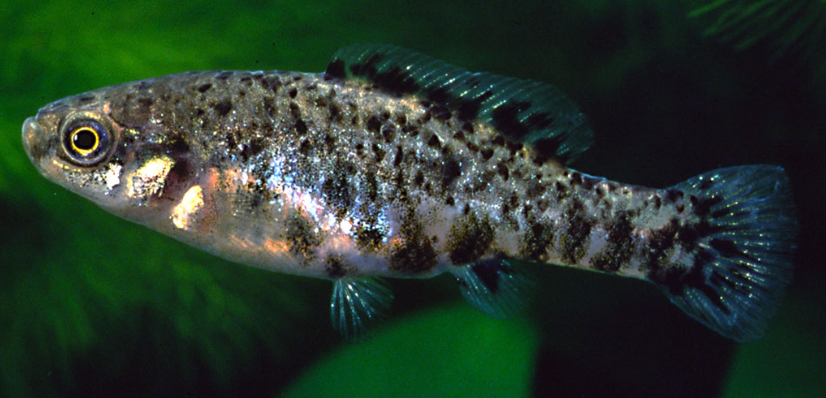

Systématique
- Ordre : Cyprinodontiformes
- Famille : Goodeidae
- Genre : Hubbsina
- Espèce : H. turneri
- Auteur : de Buen, 1940

Hubbsina turneri est un petit poisson vivipare matrotrophe d'une importance scientifique majeure, étant le seul représentant de son genre. Longtemps discuté taxonomiquement, il appartient à la lignée des Goodeinae et présente des traits morphologiques primitifs qui le rapprochent des genres Girardinichthys et Allotoca.
C'est une espèce de petite taille : les mâles mesurent environ 3 à 4 cm, tandis que les femelles peuvent atteindre 5 cm. Le corps est fusiforme et présente un patron de coloration subtil, composé d'une base gris-olive parsemée de petites taches noires irrégulières sur les flancs, formant parfois une ligne latérale discontinue. Les mâles adultes développent une pigmentation plus sombre sur les nageoires et le bas du corps lors des parades.
Cette espèce est classée "En danger critique d'extinction" (CR) par l'UICN. Sa survie est extrêmement précaire car elle ne subsiste plus que dans quelques rares zones épargnées de son habitat d'origine. Elle est pratiquement absente du commerce aquariophile standard et n'est maintenue que par une poignée d'éleveurs spécialisés dans le cadre de programmes de sauvegarde.
Hubbsina turneri est un poisson discret et pacifique. Dans la nature, il vit caché dans la végétation aquatique dense, ce qui lui permet d'échapper aux prédateurs. C'est une espèce benthopélagique qui apprécie les eaux calmes ou à courant très lent.
En captivité, il montre un tempérament timide et nécessite un aquarium riche en plantes pour se sentir en sécurité. Les interactions entre mâles sont limitées à des parades d'intimidation sans agressivité physique marquée. Il est très sensible aux variations brusques de température et à la dégradation de la qualité de l'eau.
Mode : Vivipare matrotrophe.
La reproduction est caractérisée par une gestation assez longue, environ 55 à 65 jours. Comme tous les Goodeinae, les embryons développent des trophotaeniae pour absorber les nutriments fournis par la mère. La fécondation est assurée par l'andropodium du mâle.
Les portées sont de petite taille, produisant généralement entre 5 et 15 alevins. Les nouveau-nés naissent à une taille relativement grande par rapport aux parents et sont capables de consommer immédiatement des micro-nourritures. Le succès de l'élevage dépend de la stabilité absolue des paramètres et d'un environnement calme.
Dimorphisme sexuel : Le mâle possède un andropodium (encoche sur la nageoire anale) et présente des nageoires dorsale et anale légèrement plus développées que celles de la femelle. La femelle est plus massive et plus grande à maturité.
Espérance de vie : 3 à 4 ans en aquarium sous conditions optimales.
L'espèce est endémique de la Laguna de Zacapu et des systèmes de sources associés dans l'État de Michoacán, au Mexique. Son habitat typique est constitué d'eaux claires à légèrement troubles, très riches en végétation aquatique comme Potamogeton, Ceratophyllum et des algues de type Chara.
L'eau de ces sources thermales reste relativement fraîche, oscillant entre 18 et 22 °C, avec un pH neutre à légèrement alcalin. Le substrat est principalement composé de boue et de sédiments organiques. La survie de l'espèce est intimement liée à la qualité de ces sources, menacées par le pompage et les espèces invasives.
Répartition

Origine naturelle :
- Mexique : État de Michoacán (Laguna de Zacapu et sources de la région).
- Endémique strict de ce système de sources d'altitude.
- Distribution extrêmement restreinte.
Considéré comme l'un des poissons les plus menacés du Mexique. Son maintien en captivité est crucial pour éviter l'extinction totale du genre.
Paramètres de maintenance
Température : 18 à 22 °C. Très sensible au-delà de 25 °C.
pH : 7,0 à 7,8.
GH : 8 à 15 °dGH.
Courant : Nul à faible.
Volume conseillé : 40–60 L pour un petit groupe, dans un bac spécifique richement planté.
Régime alimentaire
Régime : Omnivore à tendance insectivore.
En aquarium, il nécessite une alimentation variée et de petite taille : micro-granulés, mais surtout du vivant ou du congelé (daphnies, artémias, cyclops). Les proies vivantes sont essentielles pour déclencher le comportement reproducteur.